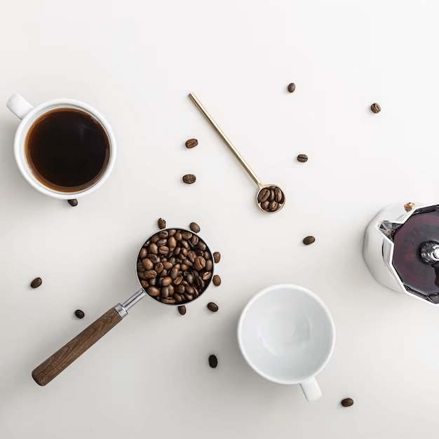
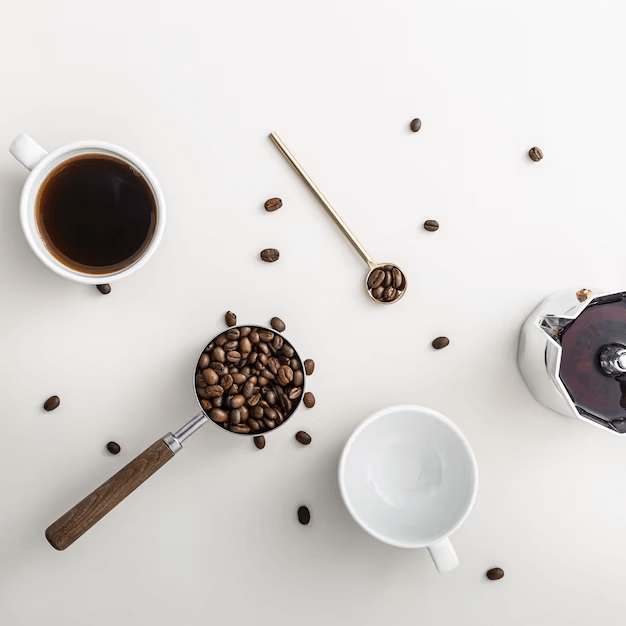
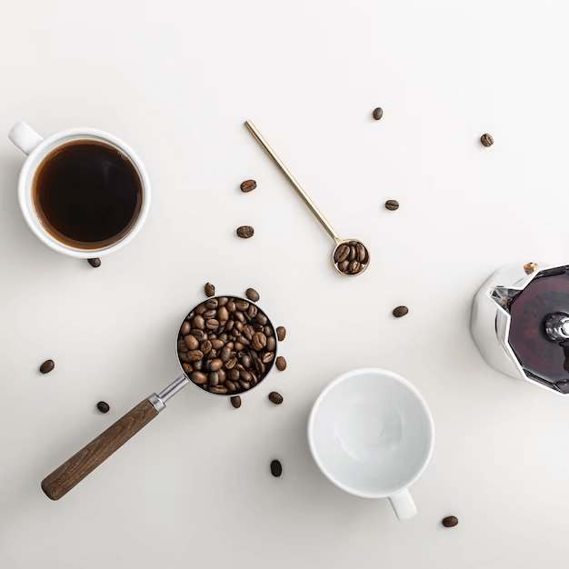

Galeria


 

O Coffee Shop Tia Rosa nasceu em 1990 com a missão de proporcionar um ambiente acolhedor e aconchegante para todos os seus clientes. O nome Tia Rosa foi escolhido em homenagem à matriarca da família, que sempre foi uma grande entusiasta do café e da culinária.
Desde então, o Coffee Shop Tia Rosa se tornou uma referência na cidade, servindo os melhores cafés, chás e quitutes, sempre com muito carinho e dedicação. Nosso objetivo é oferecer uma experiência única aos nossos clientes, onde eles possam relaxar e desfrutar de momentos especiais.
Nosso amor pelo café não se limita apenas à sua deliciosa bebida, mas sim por toda a sua história e cultura. Acreditamos que cada xícara de café tem uma história para contar, desde a plantação dos grãos até o momento em que é servido na mesa.
Por isso, buscamos sempre trabalhar com produtores locais e de alta qualidade, garantindo assim um café fresco e saboroso para nossos clientes. Além disso, temos um cuidado especial na preparação de cada bebida, utilizando técnicas artesanais e equipamentos de ponta.
Mas o que realmente nos move é o amor pelas pessoas. Adoramos receber nossos clientes e criar laços de amizade e carinho. Para nós, o café é uma desculpa para unir as pessoas e proporcionar momentos inesquecíveis.
É com esse sentimento de amor e dedicação que seguimos em frente, sempre em busca de novas formas de surpreender e encantar nossos clientes. Venha nos visitar e sinta você também o sabor do nosso café com amor.
